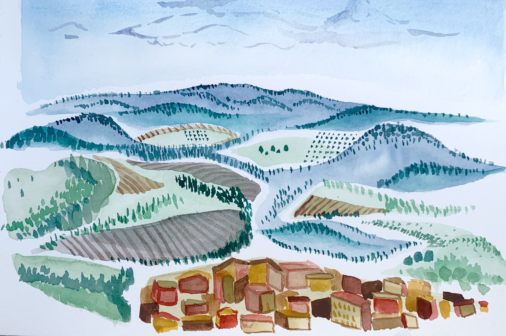
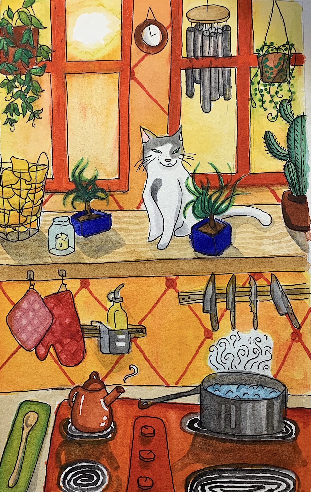
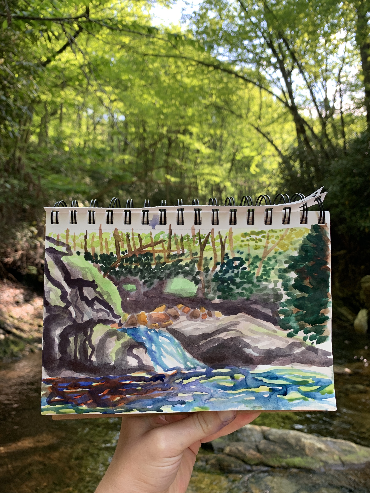
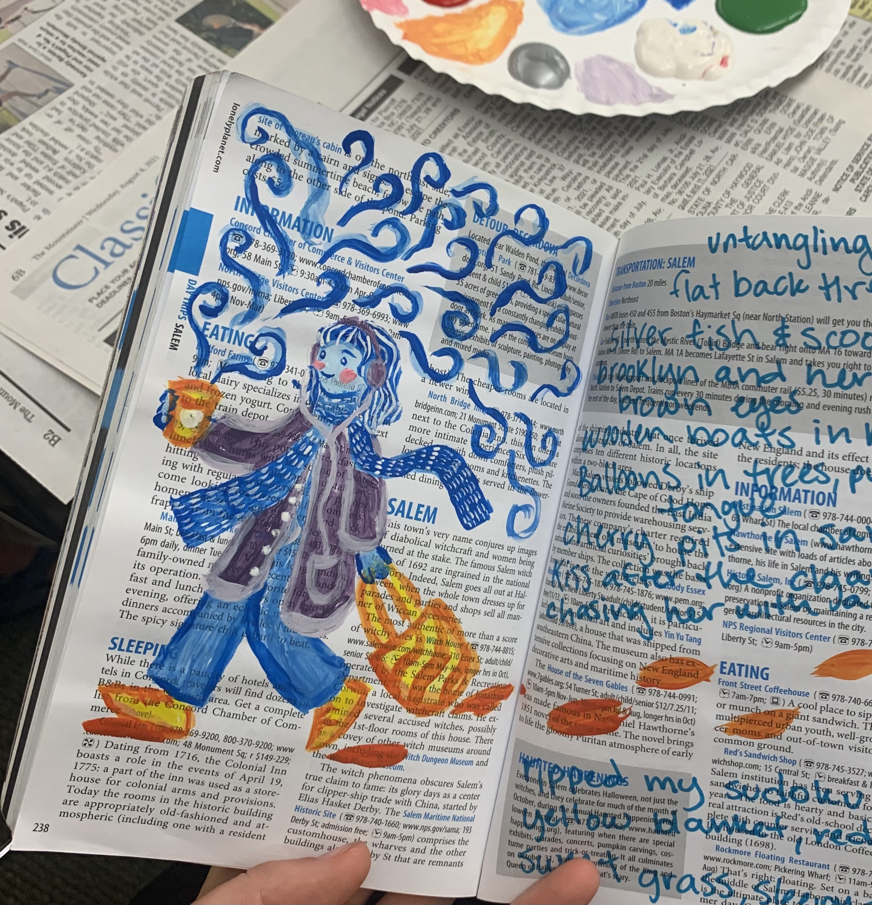
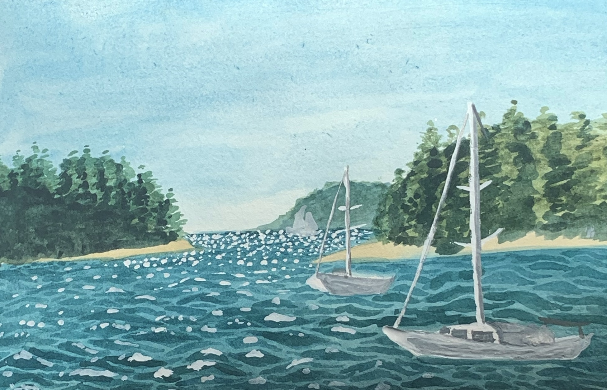
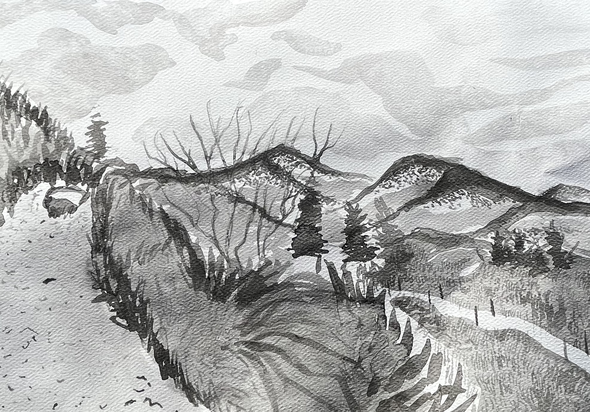

I would not consider myself to be a painter by any means, but I quite enjoy using watercolor and ink to achieve a more illustrative quality in my work. I have experimented in landscape painting mainly, along with some character creation.





